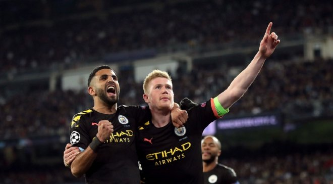
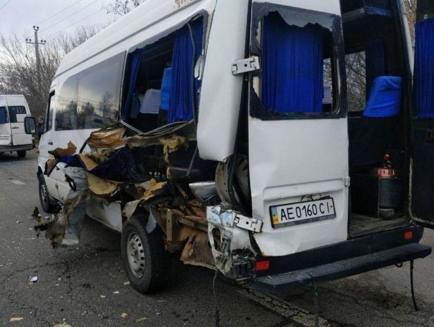

Что вас интересует?
УЕФА МОЖЕТ ПЕРЕНЕСТИ МАТЧ Ювентус – Лион НА НЕЙТРАЛЬНОЕ ПОЛЕ ИЗ-ЗА ПОДОЗРЕНИЙ НА КОРОНАВИРУС У ИГРОКОВ
Президент Лиона Жан-Мишель Ола сообщил, что УЕФА рассматривает вариант переноса матча 1/8 финала Лиги чемпионов, в котором французский клуб сойдется с Ювентусом.
Есть новые детали по этому вопросу, поскольку матчи второй команды Ювентуса перенесли из-за подозрений на коронавирус у четырех игроков. А эта команда тренируется с основным составом.
Посмотрим, как все сложится. Ждем решения УЕФА. Надеюсь, все будет хорошо, но если придется играть на нейтральном поле, мы готовы на это
ЛИГА ЧЕМПИОНОВ: УЕФА НАЗВАЛ ЛУЧШЕГО ИГРОКА НЕДЕЛИ
Победителем голосования стал хавбек Манчестер Сити Кевин де Брюйне, информирует официальный сайт Лиги чемпионов.
Бельгиец опередил нападающего Баварии Сержа Гнабри, полузащитника Барселоны Серхио Бускетса и его коллеги по амплуа из Лиона – Хуссема Ауара. Именно де Брюйне стал главным героем Манчестер Сити в первом матче против Реала. Звезда "горожан" отметился голом и ассистом на Жезуса, которые стали решающими в волевой победе над мадридцами (2:1).
В ДНЕПРЕ НЕУПРОВЛЯЕМЫЙ ГРУЗОВИК СНЕС ДВЕ МАРШРУТКИ
В Днепре на Космической произошла авария, неуправляемый грузовик снес два маршрутных такси.
Авария произошла на ул. Космической, неподалёку остановки ж/м Сокол. Как сообщается в телеграмм-канале Х***ый Днепр, водитель грузовика не справился с управлением, протаранив маршрутку 119. Последняя влетела в маршрутку 60.
Пострадал 10-летний ребёнок. Сейчас за его жизнь борются врачи.
В ДНЕПРЕ ГОРОЖАНЕ ПРОСЯТ ОТРЕМОНТИРОВАТЬ ДОРОЖНОЕ ПОКРЫТИЕ
Днепряне просят провести ремонт дороги на улице Старокодацкой, а также взять указанную дорогу на баланс города.
Об этом говорится в соответствующей петиции.
Автор петиции Максим Гончаров пишет, что необходимо провести ремонт дорожного покрытия и освещения на улице Старокодацкой. Кроме того, горожанин просит горсовет взять указанную дорогу по улице Новокодацкой на баланс города.
Чтобы петицию рассмотрели в горсовете, она должна собраться 1000 подписей горожан.
ИсточникНАЦБАНК ЗНАЧИТЕЛЬНО ПОВЫСИЛ ОФИЦИАЛЬНЫЙ КУРС ДОЛЛАРА
Национальный банк Украины (НБУ) на 3 марта 2020 года установил официальный курс на уровне 24,81 гривен за доллар, что на 22 копейки выше по сравнению с предыдущим банковским днем.
Об этом свидетельствуют данные на сайте регулятора.
В СРЕДУ РАДА МОЖЕТ НАЗНАЧИТЬ 4 НОВЫХ МИНИСТРОВ
На внеочередном заседании Верховной Рады 4 марта парламент может осуществить 4 ротации в правительстве и назначить нового министра иностранных дел, министра здравоохранения, министра соцполитики, министра оккупированных территорий и вице-премьера по промышленности.
{kind=link}